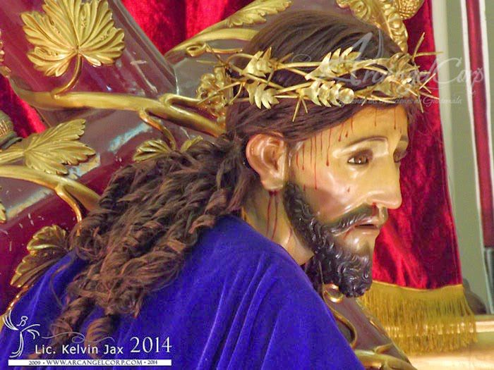
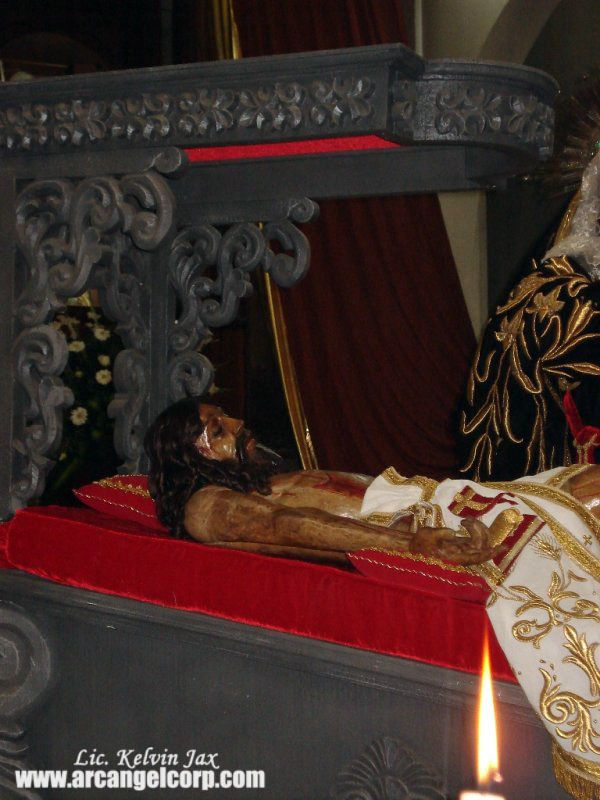

La Hermandad de Jesús del Aposento y Señor Sepultado tiene sus raíces en la Parroquia de Santo Domingo de Guzmán, ubicada en el centro histórico de Mixco. Esta hermandad es una de las más representativas de la Semana Santa en Mixco y ha sido fundamental en la organización y realización de las procesiones de la Pasión, Muerte y Resurrección de Cristo.
Jesús del Aposento:
La imagen de Jesús del Aposento es venerada en la Parroquia de Santo Domingo de Guzmán. Su procesión se realiza el miércoles santo y es conocida como la Procesión de la Reseña. Esta procesión recorre las principales calles de la zona 1 de Mixco, siendo una de las más esperadas por los fieles devotos. La imagen de Jesús del Aposento es conocida por su porte solemne y su representación de Cristo en el momento de la Última Cena.

Señor Sepultado:
La imagen del Señor Sepultado también es parte importante de esta hermandad. Su procesión se lleva a cabo el viernes santo y es conocida como la Procesión del Santo Entierro. Esta procesión es una de las más antiguas y tradicionales de Mixco, con una gran participación de la comunidad. La imagen del Señor Sepultado es acompañada por la Virgen de la Soledad y otras representaciones de la Pasión de Cristo.

Fundación y Tradición:
La hermandad tiene una larga tradición en Mixco, siendo reconocida por su organización y devoción. A lo largo de los años, ha mantenido vivas las tradiciones de la Semana Santa, adaptándose a los tiempos pero sin perder su esencia. La hermandad ha sido fundamental en la preservación de las tradiciones religiosas y culturales de Mixco.